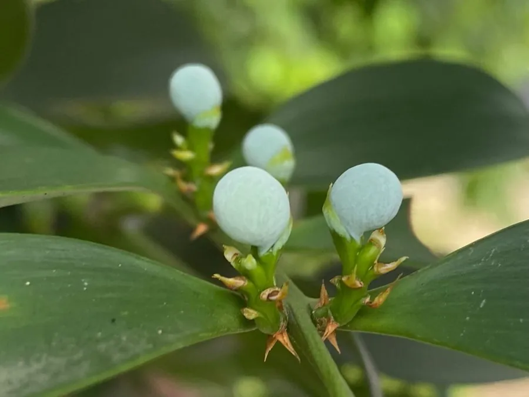

蕨类与裸子植物 · 植物界
竹柏 Nageia nagi

竹柏的叶片宽卵形、对生如竹叶，是罗汉松科中少见的阔叶类针叶树，树形清秀，可作园林树种，木材优良。
- 分类
- 门裸子植物门纲松纲目罗汉松目科罗汉松科属竹柏属
- 栖息环境
- 温暖湿润的山地林中，喜半阴与湿润环境
- 地理分布
- 中国南方及日本，各地园林有栽培
- 保护级别
- 暂无评估；野生种群较少，需保护
物种志
竹柏是罗汉松科常绿乔木，高可达 20 m，树皮灰褐色、片状剥落。叶片宽卵形或椭圆状披针形，厚革质，对生，无中脉而有多条平行细脉，形似竹叶，因此得名“竹柏”。雌雄异株，雄球花穗状，雌球花单生。种子核果状，球形，成熟时暗紫色，外被肉质假种皮。
竹柏分布于中国南方及日本，多生于温暖湿润的山地林中，喜半阴、湿润的环境，耐寒性较差。它树干通直、树冠浓密，叶形似竹，四季常绿，是优良的园林与庭院树种；木材纹理直、结构细，可供建筑、家具与文具用材。竹柏的种子可榨油。它的叶形在罗汉松科中较为特殊，是辨认它的重要特征。竹柏生长较慢，野生资源需要保护。
形态与习性
- 树高可达 20 m
- 叶宽卵形厚革质，对生如竹叶
- 雌雄异株
- 种子球形，成熟时暗紫色
- 用途园林树种与用材
趣味知识
- 竹柏的叶子宽厚、对生，像竹叶，所以叫“竹柏”。
- 它的叶没有明显中脉，而是多条平行细脉。
- 竹柏树形清秀、四季常绿，是南方常见的园林树种。